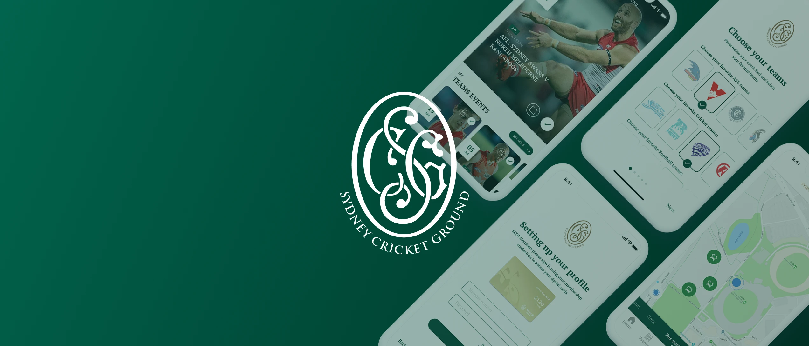

UI Design · 2020
Case 07 / 08
Sydney Cricket Ground
Digital fan experience for one of Australia's most iconic venues: match-day companion app with live stats, wayfinding, and in-seat ordering.
Deliverables
Client
Sydney Cricket Ground (SCG)
Year
2020
Role
UI Designer

01Brief
Elevating the match day experience at an iconic venue.
The Sydney Cricket Ground is more than a stadium: it's a 170-year-old institution and one of the most beloved sporting venues in the Southern Hemisphere. But the in-stadium fan experience hadn't evolved with the times. Fans were still relying on static signage, long queues, and guesswork to navigate their match day.
02Challenge
The vision: create a companion app that transformed the SCG experience from arrival to final whistle, combining live match data with practical venue features like interactive wayfinding, in-seat food and drink ordering, and real-time queue indicators for facilities and concessions.
03Approach
I designed the full UI across all key flows, working with the venue's operations team to understand the physical environment and fan pain points. The design balanced rich sports content: live stats, ball-by-ball commentary, and player profiles, alongside the utility features that make a day at the ground effortless.
04Gallery
Project gallery
Scroll or hover to browse